|
В. И. ЕЛИСЕЕВ ВВЕДЕНИЕ В МЕТОДЫ ТЕОРИИ
ФУНКЦИЙ ПРОСТРАНСТВЕННОГО КОМПЛЕКСНОГО ПЕРЕМЕННОГО |
|
1.1.3. К вопросу об основной теореме алгебры.
Появление новых корней в квадратном уравнении не противоречит многочисленным формулировкам основной теоремы алгебры, а уточняет их в плане принадлежности многочлена к определенной мерности пространства, способе разложения его на линейные множители и количестве вариантов этих разложений. Основная теорема алгебры относится к числовым полям и многочленам, определенным в них. Пространственная комплексная алгебра относится к числовым полям, поэтому необходима корректировка основной теоремы алгебры
. До настоящего времени корректировка не требовалась, так как двумерному комплексному полю не было альтернативы.Многочлен в конечном счете эта функция, а функции всегда определены в каких либо полях, поэтому расширение поля комплексных чисел влечет за собой корректировку основной теоремы.Отыскание новых корней многочлена из условия когда два линейных множителя не равных нулю в произведении дают нуль не противоречит основной теоремы алгебры, а показывает, что многочлен может быть разложен на произведение линейных множителей по целому ряду эквивалентных вариантов.Пусть задан многочлен n степени
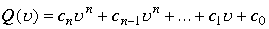,
в котором коэффициенты
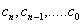могут быть действительными или комплексными числами. Если многочлен не имеет обычных кратных корней, то он может быть разложен на произведение n линейных множителей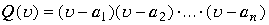
Если многочлен имеет комплексные корни, то к произведению линейных множителей добавляются квадратные многочлены.
Произведение двух линейных множителей дает квадратный трехчлен в общем виде , который в пространстве может иметь эквивалентное разложение на линейные множители , корни в которых определены из условия существования в пространстве делителей нуля. В пространстве для многочлена степени n больше 2 эквивалентных разложений бесконечное множество, так как к каждому эквивалентному разложению можно применить формулу сочетаний из n по 2
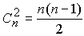
Сочетание определяет количество возможных квадратных многочленов в эквивалентных разложениях, которые можно разложить на новые линейные множители, определенные из условия существования в пространстве делителей нуля. Перебирая в каждом эквивалентном разложении произведение линейных множителей получаем новое эквивалентное разложение
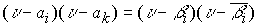, где 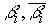-сопряженные корни, определенные из условия существования в пространстве делителей нуля.
Пример №3
Имеем 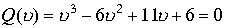,корни этого многочлена в действительной области
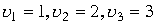, поэтому первый вариант разложения имеет вид
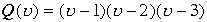, многочлен может быть разложен еще по трем вариантам
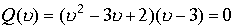,квадратный трехчлен имеет два пространственных корня
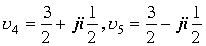 по этому имеем
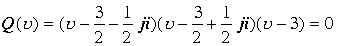
Далее первый линейный множитель(или второй) в произведении с третьим даст также квадратное уравнение ,которое вновь может быть разложено на произведение линейных множителей с новыми корнями.
Второй вариант разложения
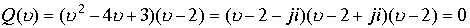,
Произведение первого или второго линейного множителя с третьим дадут также квадратный многочлен, решение которых позволит получить еще два эквивалентных разложения. Дналогично обстоит дело и с третьим исходным разложением.
Третий вариант разложения
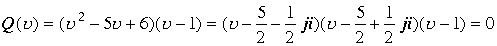
Сочетание линейного множителя с другими линейными множителями в любом эквивалентном разложении даст новое квадратное уравнение ,решение которого даст новое разложение на линейные множители. Эта цепочка разложений бесконечна, так как сочетание из
n по 2 для многочлена с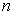>2 можно применить бесконечное число раз.Подстановка любого корня из эквивалентных разложений в другие разложения обращают последние в ноль. В пространстве вычет нуля означает вычет всего подпространства делителей нуля. Вычет нуля означает вычет всего изолированного направления и всех эквивалентных разложений многочлена ,которые на этом направлении тождественно равны нулю.
Пример.Рассмотрим разложение многочлена третей степени на эквивалентные разложения
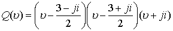
Таким образом, имеем цепочку эквивалентных разложений
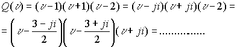Подстановка любого корня из одного разложения в другое обращает его в ноль по законам комплексной пространственной алгебры.
Каждое эквивалентное разложение имеет
n корней в соответствии со степенью многочлена.Перемешивание линейных множителей из одного эквивалентного разложения с другим недопустимо , ибо приводит к другому многочлену.
Произведение сопряженных делителей нуля определяют ноль в пространстве. При подстановке одного из корней разложения в другое эквивалентное разложен
ие обращает два линейных множителя в произведение делителей нуля общего вида 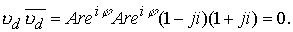 При этом эквивалентные разложения вычитаются из пространства вместе с вычетом этого корня.
При этом эквивалентные разложения вычитаются из пространства вместе с вычетом этого корня.
Многочлен может быть представлен как сумма двух эквивалентных разложений, например
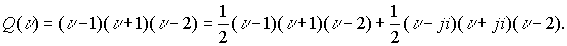Это разложение применено в дальнейшем для исследования поведения функций и операций с ними. В дальнейшем можно будет ограничеться одним из эквивалентных разложений.
Пространство накладывает жесткое ограничение на варианты разложений. В пространстве для эквивалентных разложений квадратного многочлена область должна включать обо сопряженных корня , определяемых из условия наличия делителей нуля. Если рассматривается многочлен только в верхнем или только нижнем полупространстве то разложение не имеет эквивалентных.
Функции вида
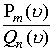, где в числителе и знаменателе многочлены соответственно степени m и n и ,разлагается на сумму простых дробей вида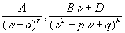. В пространстве квадратный трехчлен вне зависимости от знака дискриминанта 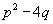может быть разложен на линейные дроби по двум вариантам
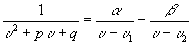,где 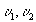есть корни, могут быть действительными и комплексными в зависимости от видов коэффициентов p, q а также
, где 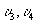 есть корни в пространстве.
Примечание. Линейный множитель 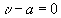имеет только один корень a. Если принять
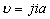то 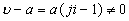.Поэтому дробь
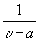имеет один корень в знаменатели .
Примечание: Квадратное уравнение
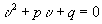 разлагается по двум вариантам (1.2.) в произведение линейных множителей 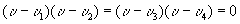,где 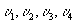являются корнями квадратного уравнения, определенные по трем вариантам, подстановка любого из них в исходное квадратное уравнение обращает его в ноль.Таким образом, дробь должна в пространстве раскладываться на две простейшие дроби
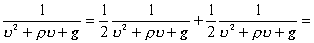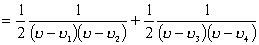
При подстановке корней
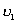или 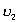 во вторую дробь последняя в знаменателе будет иметь ноль как произведение делителей нуля. При подстановке корней 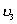 или 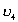 в первую дробь в знаменателе также будем иметь ноль как произведение делителей нуля. Других корней квадратное уравнение не имеет. Разложение дроби на сумму двух простейших дробей единственно. Разложение показывает, когда переменнаяВ результате дробь разлагается в пространстве на сумму четырех дробей,
что позволяет исключить из рассмотрения в пространстве точек изолированной оси.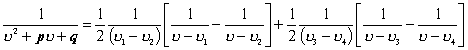
Если в знаменателе одну из разностей приравнять делителю нуля
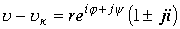 тогда
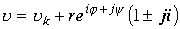 и в соответствии с комплексной алгеброй заключаем, что точка 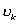, являющаяся одним из корней уравнения, стоящего в знаменателе, окружена сферой из делителей нуля. В этом случае модуль r изменяется в пределах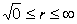.
В силу свойств делителей нуля
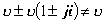 последнее соотношение необходимо рассматривать как замену переменных и перенос критической точки в нулевую точку с изолированным направлением.Мини оглавление:
[0], [1.1.1, 1.1.2, 1.1.3, 1.1.4, 1.1.5, 1.1.6, 1.1.7, 1.1.8, 1.2, 1.2.1, 1.2.2, 1.2.2.a, 1.2.2.b, 1.2.2.c, 1.2.2.d, 1.2.2.e, 1.2.2.f, 1.2.2.g, 1.2.2.h, 1.2.3, 1.3.1, 1.3.2, 1.3.3, 1.3.4, 1.3.5, 1.3.6, 1.4.1, 1.4.2, 1.5, 1.6, 1.7.1, 1.7.2, 1.7.3.1, 1.7.3.2, 1.7.3.3, 1.7.4.1, 1.7.4.2, 1.8.1], [2.1, 2.2],[3.1, 3.2, 3.3, 3.4.1, 3.4.2, 3.4.3, 3.4.4, 3.4.5],[4.1, 4.2, 4.3, 4.4],[5.1, 5.1.Рис.52, 5.2, 5.3, 5.4, 5.4.Т1, 5.4.Т2, 5.4.Т3, 5.5.1, 5.5.2, 5.5.3, 5.5.4],[6.1.1, 6.1.2, 6.2.1, 6.2.2, 6.2.3, 6.2.4, 6.2.5, 6.3, 6.4.1, 6.4.2, 6.5.1, 6.5.2],[7.1, 7.2, 7.3, 7.4, 7.5, 7.6, 7.7.1, 7.7.2, 7.8.1, 7.8.2, 7.8.3, 7.9],[8.1, 8.2.1, 8.2.2, 8.3, 8.4, 8.5, 8.6, 8.6.T1, 8.7, 8.8.1, 8.8.2, 8.8.3, 8.9.1, 8.9.2, 8.9.3, 8.10, 8.10.T2, 8.10.T3],[9.1, 9.2, 9.3, Рис.88, 89, 90, 91, 92, 93, 94, 95, 96, 97, 98, 99, 100],[10.1, 10.2, 10.3, 10.4, 10.5, 10.6, 10.7, 10.8, 10.9, 10.10, 10.11, 10.12, 10.13, 10.14, 10.15.1, 10.15.2, 10.16.1, 10.16.2, 10.17, 10.18],[11]
Размещенный материал является электронной версией книги: © В.И.Елисеев, "Введение в методы теории функций пространственного комплексного переменного", изданной Центром научно-технического творчества молодежи Алгоритм. - М.:, НИАТ. - 1990. Шифр Д7-90/83308. в каталоге Государственной публичной научно-технической библиотеки. Сайт действует с 10 августа 1998.
E-mail: mathsru@gmail.com